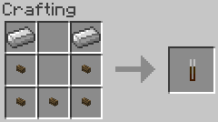

This mod adds several related blocks: fireplace, the main block of the mod; andiron, a decorative block to hold kindling; fireplace stand, a stand to hold fireplace tools; and kindling, fuel for the fireplace that can also be stacked as a block. Kindling can be quickly added to a fireplace, andiron, or kindling pile by right-clicking the block. Conversely, kindling can be removed from said blocks by right-clicking with an empty hand.
The fireplace only accepts kindling as fuel and likewise the andiron can only hold kindling. In addition to being placed in the fireplace and andiron, up to 32 pieces of kindling can be placed in a single block.
The fireplace stand can hold one of each of the three fireplace tools.
There are three tools related to the fireplace: poker, shovel, and tongs. The poker currently has no functionality, but will receive a purpose at some point. The shovel and tongs can be used on a fireplace to extract ash and embers, respectively.
Fireplace ash can be used as an inefficient source of solid fuel or, for better results, can be crafted into charcoal. Fireplace embers simply serve as a form of solid fuel.